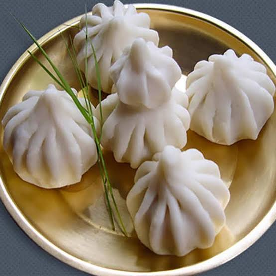

ukdiche modak
recipe
Equipment:
steamer
frying pan
Ingredients:
Ukadiche Modak filling:
½ cup jaggery
¾ cup fresh shredded coconut
½ tablespoon poppy seeds/khuskhus
¼ teaspoon nutmeg powder optional
or cardamom powder (optional)
Ukadiche Modak covering/pastry:
¾ th cup hot water
1 cup rice flour fine
1 teaspoon ghee or clarified butter coconut oil if vegan
pinch of salt
Instructions For the filling
Heat jaggery on a non-stick pan till it starts to melt.
Add the shredded coconut, poppy seeds,nutmeg powder,cardamom powder until it forms a gooey mixture.
For covering/pastry
Boil water and keep it aside.
Add all the ingredients for the pastry to this boiled water and mix well with a ladle.
Cover it and keep it aside for 10 minutes
Knead the dough till you can form a stiff dough for the pastry.
Divide it into small balls and roll them into small circles of equal size using a rolling pin.
Add 1tbsp filling to each of these dough circles and hold it in your palm.
Fold the edges of each modak,slowly between fingers,and close their loop, by slowly rotating it.
Heat the steamer and place them one by one.
Steam them for 10-12 minutes until they are non-sticky on touch .
Notes:
NotesYou may need 1 cup of water for dough, depending on the rice flour you are using.You need to ensure that the dough is stiff.Steam for 3-4 minutes more,if you still find modak sticky.